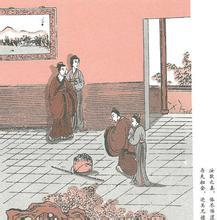

牛弘不问

隋朝时候，有一个人叫做牛弘的，他原来本是姓寮。他的父亲名叫寮允的，做了后魏国的侍中官，所以皇上赐给他姓牛。牛弘的生平，最喜欢读书，他的见闻又很广博，后来做了吏部尚书。 他的弟弟名叫牛弼的，有一次，吃醉了酒，竟把牛弘驾车的一只牛，用箭射死了。牛弘的妻子去告诉丈夫说，叔叔今天不知道为什么缘故，竟敢把你驾车的一只牛射死了。 牛弘听了这种话，也不以为意，只冷冷地回答他的妻子道，做干肉吃好了。他的妻子又说道，叔叔射杀了你一只牛，真是大大奇怪的事情呀。牛弘又回答他道，我已经晓得了。他的脸色很自然，仍旧读着书不息。